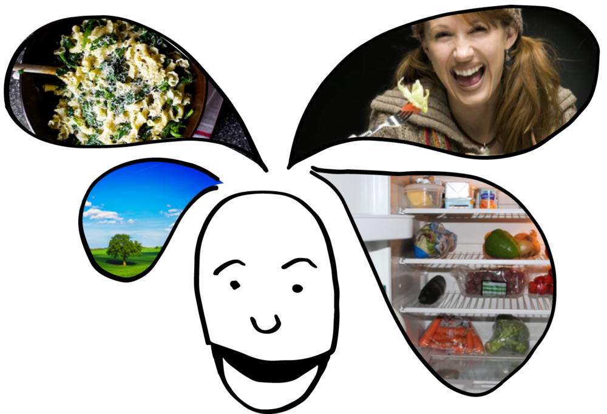

Use the ingredients you already have in your fridge and be inspired.
Join us in our movement to make cooking easier, more fun, and more sustainable!
Less food thrown away, more food on your plate
Open Jar promo video.
Open Jar commented walkthrough.
because he is wasting a lot of food. His fridge is full of about-to-expire products and either he doesn't really know how to make a use of them or he simply forgets he bought it. He realises that throwing food away is no good for environment and definitely doesn't contribute to sustainability. Another problem is that trying to cook the food he bought before makes him cook the same boring recipes all over again. And this makes his girlfriend very unhappy.
With a new Open Jar app, he can keep track of the food he has at home and check out some cool recipes he can cook from these ingredients. All the extra ingredients he then easily adds to his shopping list.
This shopping list makes his
Bob always knows what's in his fridge and can turn it into a nice, creative recipe before it expires. His fridge is free of expired products, he acts more environment-friendly and his new girlfriend is super happy!
We all need food for our living.
However, food has a large impact on the environment throughout production, distribution and consumption. Moreover, roughly one third of food produced for human consumption is lost or wasted worldwide, which amounts to 1,3 billion tons of food per year (FAO, 2011). It means that not only the resources in the production become wasted, but also that all the emissions arising from the food chain has occurred to no use at all.
In Sweden, the production of the food that is wasted each year equals to 2 million tons of carbon emissions, which constitutes around 3 percent of the total amount of emissions of green house gases in Sweden (Naturvårdsverket, 2014).
Who is to blame?
Most of the food waste is caused by households, although waste exists throughout the food supply chain (Naturvårdsverket, 2014). For example, in 2012 the Swedish food industry wasted 171 000 ton of food (18 kg/person), while the retail sector wasted 70 000 tons (7 kg/person). In comparison, the households wasted 771 000 tons of food (81 kg/person). Around 35 percent of this food waste can be considered as unnecessary, which means it is food that actually could have been used.
So, why do we throw away eatable food?
According to a recent study (Ipsos, 2013), many households already have a relatively structured relationship to buying food, involving inventories, shopping lists and weekly shopping trips. Nonetheless, it appears that the major reason for throwing away food is that it has been standing for too long. The expiry dates are not followed as strictly as often presumed, but we trust our senses in finding out what is still eatable. The problem rather seems to be that the food has been forgotten before we try it out.
Alfred - Team leader/Problem owner & Pizza and spaghetti lover
Timo - Coffee drinker
Tadeáš - Coder and a company's first secretary
Marie - Excited photographer
Elisabete - Squarespace magician, passionate cook
Ingrid - Food waste facts & figures specialist